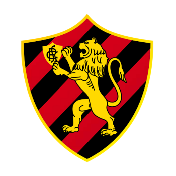

Site oficial do Sport Clube do Recife

Alguns tópicos que talvez queria saber
A NOSSA HISTÓRIA
-
“O Sport, meus amigos, será um autêntico campeão, pois nasceu sob o
signo da valentia e dele jamais se apartará”. Guilherme de Aquino
Fonseca, 29/04/1906.
A história mostra, ano após ano, que a frase do fundador Guilherme de
Aquino em 1905 tinha ares de profecia. O Sport Club do Recife nasceu e
nunca deixou de ser em 119 anos de existência “um autêntico campeão”.
Uma história de valentia talhada por vitórias e títulos. São mais de
70 títulos conquistados pelo futebol profissional e mais algumas
centenas com as categorias de base e com as modalidades olímpicas e
amadoras.
O Sport foi fundado em 13 de maio de 1905, no salão da
Associação dos Empregados do Comércio de Pernambuco. O engenheiro
pernambucano Guilherme de Aquino reuniu, como o próprio hino do Leão
diz, ardentes seguidores para começar a história do maior Clube do
Norte-Nordeste.
No total, foram 67 torcedores admitidos como
fundadores, mesmo sem que todos os nomes constem na ata de fundação.

-
A PRIMEIRA VEZ A GENTE NÃO ESQUECE
- Em 29 de abril de 1906, o Sport Club do Recife alcançou sua primeira vitória. O confronto foi contra o Western Telegraph, uma equipe formada por funcionários de uma companhia inglesa em Recife. Nesse histórico encontro, o gol da vitória rubro-negra foi marcado por Fellows, solidificando o início triunfante do clube no cenário esportivo.